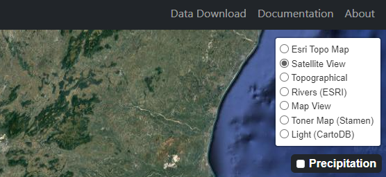

The landing page of the website contains the following elements and functionalities:
-
Zoom controls: The + and - symbols can be used to zoom-in and zoom-out of the map.
-
Navigation Bar: This sections contains links to the Data Download page, the Documentation, the About section, and
a link back to the Home page. The RAT logo on the right takes the user to the RAT Global website.
-
Dam Locations: The blue markers indicate the various reservoirs across Kerala that is currently available in RAT 3.0.
-
Dam data: The markers when clicked displays the reservoir name along with a 'View Data' button. This can be clicked on to view the
RAT data for the particular reservoir.
-
Map Layers: This toggle can be clicked to view the various map layers available. The user can toggle between the various basemaps by cliking on the corresponding
radio buttons

-
Precipitation: When toggled, displays the distribution of rainfall over Kerala, for a selected date.